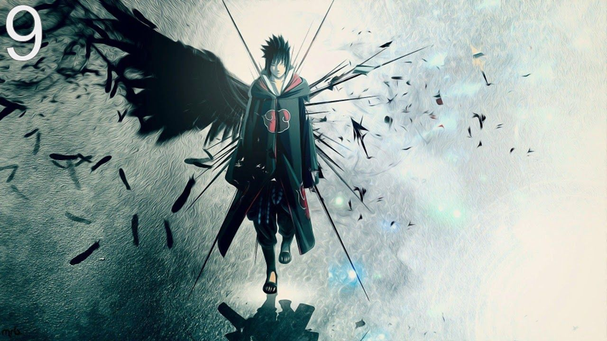

PM Modi to inaugurate Vande Bharat Express in Mumbai on 10th February
In the wake of PM’s visit, drones & flying activities banned in the jurisdiction of Airport PS, Sahar PS, Colaba PS, MRA Marg PS, MIDC PS & Andheri PS
We have a goal of achieving a 20% blend of ethanol by 2025: Karnataka CM
We have brought an investor-friendly EV policy. Karnataka is a high producer of ethanol. We have a goal of achieving a 20% blend of ethanol by 2025. The PM & our ultimate slogan is maximum power with minimum emission,says Karnataka CM Basavaraj Bommai
We have brought an investor-friendly EV policy. Karnataka is a high producer of ethanol.

Formating elements
Adani promoters may prepay up to Rs 8,000 cr
loans in 45 days
New-York based short-seller Hindenburg Research published its report on the Adani Group of companies on January 24th accusing the group of engaging in stock manipulation and accounting fraud over the course of decades. The Adani Group responded to the group and said the report is "a malicious combination of selective misinformation and stale, baseless and discredited allegations". Shares of Adani Enterprises, the flagship company of the ports-to-energy conglomerate, were due to go on sale on January 25 in India's largest-ever secondary share offering. Despite the report, the company went ahead with the FPO launch. The Follow-On Public Offering (FPO) sailed through the initial hiccups and was fully subscribed on January 31. But within a day, the company declared it had cancelled its FPO and would return its investors' money. From January 24th to February 3, Adani Group companies lost around Rs 9 lakh crore m-cap in seven trading sessions. The total market capitalisation of the Adani Group slipped to Rs 10 lakh crore on February 3 from Rs 19.2lakh crore as of January 24, the day Hindenburg Research made its report public. Here are the latest updates on the Adani Group Hindenburg Row: